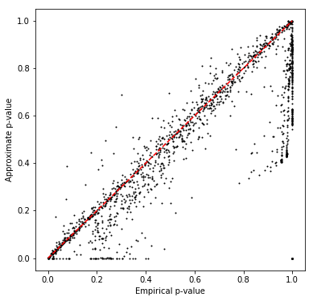
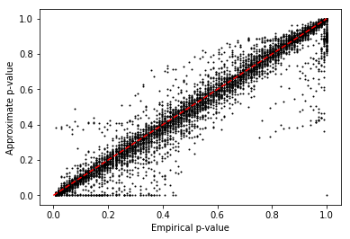
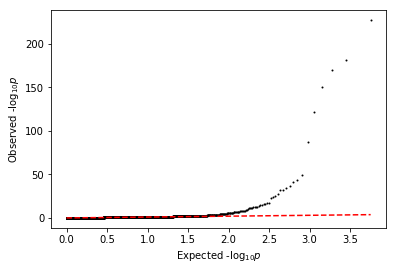

QTL mapping pipeline
Introduction
We previously estimated means and dispersions per individual, per gene. In our modular approach, we now fit log linear models for each:
\[ \ln \mu_{ik} = X \beta_\mu + \epsilon_\mu \]
\[ \ln \phi_{ik} = X \beta_\phi + \epsilon_\phi \]
where \(\mu_{ik}, \phi_{ik}\) are the mean and dispersion for individual \(i\), gene \(k\), \(X\) is the genotype matrix (\(n \times 1)\), and \(\beta_\mu, \beta_\phi\) are the effect sizes (scalar).
Here, we present the following analyses:
- We replicate bulk eQTLs in the scRNA-Seq data
- We show that approximating a permutation test is not appropriate
- We call mean QTLs in the scRNA-Seq data
- We call robustness QTLs in the scRNA-Seq data
Genotype processing
QTLtools reported 0 variants in cis for an unexpected number of genes when
using the provided genotype file, so reprocess the genotypes to fix it.
sbatch --partition=broadwl --job-name process-geno #!/bin/bash set -e source activate scqtl zcat /project/compbio/jointLCLs/genotype/hg19/YRI/vcf/chr{?,??}.hg19.vcf.gz | awk 'BEGIN {print "##fileformat=VCFv4.1"} NR == 1 || ! /CHROM/ {print}' | bgzip >genotypes.vcf.gz tabix genotypes.vcf.gz
sbatch --partition=broadwl #!/bin/bash source activate scqtl plink --memory 2000 --vcf genotypes.vcf.gz --geno 0.01 --maf 0.01 --recode vcf-iid --out genotypes-qc bgzip genotypes-qc.vcf tabix -f -p vcf genotypes-qc.vcf.gz
Replicate bulk eQTLs in the single cell data
Read the bulk eQTLs (nominally significant).
def parse_bulk_qtl_record(row): gene, _ = row[0].split('.') id_, *_ = row[5].split('.') return pd.Series({'gene': gene, 'id': id_, 'beta': row.iloc[-3], 'p_bulk': row.iloc[-1]}) bulk_qtls = (pd.read_table('/project2/gilad/singlecell-qtl/bulk/permutations.all.RNAseq_run.fixed.txt.gz', sep=' ', header=None) .fillna('') .apply(parse_bulk_qtl_record, axis=1))
Read the bulk eQTLs (significant by permutation test).
def parse_perm_bulk_qtl_record(row): gene, *_ = row[0].split('.') id_, chr_, pos = row[1].split('.') return pd.Series({'gene': gene, 'id': id_, 'chr': chr_, 'pos': pos, 'p_bulk': row.iloc[-1]}) perm_bulk_qtls = (pd.read_table('/project2/gilad/singlecell-qtl/bulk/permutations.all.RNAseq_run.fixed.txt.gz.bh.txt', sep=' ', header=0) .apply(parse_perm_bulk_qtl_record, axis=1))
Test each bulk QTL-gene pair in the single cell data. Mean-impute and center genotypes.
def parse_vcf(record): geno = [sum(float(h) for h in g.split('/')) if '.' not in g else -1 for g in record[9:]] return pd.Series(geno) def standardize(geno): # Important: this has to be done after filtering to common individuals orig_geno = geno.copy() # Important: match the qtltools implementation geno = np.ma.masked_less(geno.values, 0) geno = geno.filled(geno.mean()) geno -= geno.mean() return geno def extract_qtl_gene_pair(bulk_qtls, means): common_means, common_qtls = means.align(bulk_qtls.set_index('gene'), join='inner', axis=0) header = pd.read_table('/project2/gilad/singlecell-qtl/bulk/genotypes.vcf.gz', skiprows=1, nrows=1, header=0)[9:] genotypes = tabix.open('/project2/gilad/singlecell-qtl/bulk/genotypes.vcf.gz') X, Y = (common_qtls .apply(lambda x: parse_vcf(next(genotypes.query(x['chr'], int(x['pos']) - 1, int(x['pos'])))), axis=1) .rename(columns={i: ind for i, ind in enumerate(header.columns[9:])}) .align(common_means, join='inner', axis=None)) X = X.apply(standardize, axis=1) return X, Y
Define replication as significant at FDR 5% in both bulk and single cell.
def bh(df, column, fdr=0.05): num_tests = df.shape[0] return np.logical_and.accumulate(df.sort_values(column)[column] < fdr * np.arange(1, num_tests + 1) / num_tests)
NB model
Estimate a lower bound on the replication rate using the following procedure:
- For each individual, for each gene, estimate a mean and dispersion in the single cell data ignoring zero inflation (i.e., just fit a negative binomial model)
- For each bulk RNA-Seq eQTL-gene pair, test the SNP against the estimated means
Read the estimated parameters (phenotypes) then center them.
with sqlite3.connect('/scratch/midway2/aksarkar/singlecell/browser.db') as conn: mean = (pd.read_sql('select gene, ind, nb_log_mean from params', conn) .pivot(index='gene', columns='ind', values='nb_log_mean') .transform(lambda x: x - x.mean(), axis=1))
Perform the eQTL tests.
X, Y = extract_qtl_gene_pair(perm_bulk_qtls, mean) result = [] _sf = st.chi2(1).sf for (_, x), (name, y) in zip(X.iterrows(), Y.iterrows()): if np.isclose(x.std(), 0): print('Skipping {}'.format(name)) continue beta, rss, *_ = np.linalg.lstsq(x.values.reshape(-1, 1), y.values.ravel(), rcond=-1) sigma2 = rss / y.shape[0] se = sigma2 / np.inner(x.values, x.values) pval = _sf(np.square(beta / se)) result.append({'gene': name, 'beta': beta[0], 'p_sc': pval.ravel()[0]}) merged = (bulk_qtls.merge(pd.DataFrame.from_dict(result), on='gene', suffixes=['_bulk', '_sc']) .set_index('gene') .sort_values('p_bulk') .reset_index()[['gene', 'id', 'p_bulk', 'beta_bulk', 'p_sc', 'beta_sc']])
Skipping ENSG00000141867 Skipping ENSG00000164823
Estimate the replication rate.
bulk_fdr_pass = bh(merged, 'p_bulk') sc_fdr_pass = bh(merged, 'p_sc') replicated = merged[np.logical_and(*bulk_fdr_pass.align(sc_fdr_pass))] replicated.shape[0], replicated.shape[0] / merged.shape[0]
(892, 0.9529914529914529)
Estimate the concordance.
sign_pass = (replicated['beta_bulk'] * replicated['beta_sc']).values > 0 replicated[sign_pass].shape[0], sign_pass.sum() / replicated.shape[0]
(779, 0.8733183856502242)
Write out tables for the interactive browser.
with sqlite3.connect('/scratch/midway2/aksarkar/singlecell/browser.db') as conn: merged.to_sql('qtls', con=conn, if_exists='replace') (X .reset_index() .melt(id_vars='gene', var_name='ind') .to_sql(name='genotype', con=conn, index=False, if_exists='replace')) conn.execute('create index ix_qtls on qtls(gene);') conn.execute('create index ix_genotype on genotype(gene, ind);')
ZINB model
For each individual, for each gene, take either the negative binomial or zero-inflated negative binomial estimate, depending on which minimized the negative log-likelihood of the data.
with sqlite3.connect('/scratch/midway2/aksarkar/singlecell/browser.db') as conn: mean = (pd.read_sql('select gene, ind, case when nb_nll < zinb_nll then nb_log_mean else zinb2_log_mean end as log_mean from params;', conn) .pivot(index='gene', columns='ind', values='log_mean') .transform(lambda x: x - x.mean(), axis=1))
Skipping ENSG00000141867 Skipping ENSG00000164823
Estimate the replication rate.
(894, 0.9551282051282052)
Estimate the concordance.
(779, 0.8713646532438478)
Write out tables for the interactive browser.
Test validity of approximate permutation test
qtltools tries to calibrate false discovery rates using the following
procedure:
- For each hypothesis, permute the genotype data to estimate the null distribution of the p-values
- Fit a beta distribution to the permuted p-values via ML
- Compute the lower tail probability of the observed p-value, assuming it was generated from the fitted beta distribution
- Apply the Benjamini-Hochberg procedure on the set of lower tail probabilities (across all hypotheses)
Test whether the beta approximation is appropriate for our sample size by subsetting GEUVADIS. Take all genes on chromosome 1.
geuvadis = [] for chunk in pd.read_table('/project/compbio/geuvadis/analysis_results/GD462.GeneQuantRPKM.50FN.samplename.resk10.txt.gz', chunksize=100): geuvadis.append(chunk.query('Chr == "1"')) geuvadis = pd.concat(geuvadis)
Pick 54 random individuals from GEUVADIS.
np.random.seed(0)
subset = np.random.choice(geuvadis.columns[5:], size=54)
Write out the phenotype file for qtltools. Important: GEUVADIS VCFs code
chromosome without chr.
write_pheno_file(geuvadis.set_index(geuvadis['Gene_Symbol'].apply(lambda x: x.split('.')[0]))[subset], gene_info, '/scratch/midway2/aksarkar/singlecell/test.bed')
Index the phenotype file. Important: # sorts before c, but after 1.
export input=$input sbatch --partition=$partition --wait #!/bin/bash sort -k1,1g -k2,2n -k3,3n $input | bgzip >$input.gz tabix -p bed $input.gz
qtltools segfaults on the VCF file, so convert to plink format.
sbatch --partition=broadwl --mem=2G #!/bin/bash plink --memory 2000 --geno 0.01 --maf 0.01 --vcf /project/compbio/geuvadis/genotypes/GEUVADIS.chr1.PH1PH2_465.IMPFRQFILT_BIALLELIC_PH.annotv2.genotypes.vcf.gz --recode vcf-iid --out geuvadis-chr1 bgzip geuvadis-chr1.vcf tabix -f -p vcf geuvadis-chr1.vcf.gz
Run qtltools.
export pheno=$pheno export geno=$geno export op=$op sbatch --partition=$partition -n1 -c28 --exclusive -J $pheno-qtl -o $pheno-qtl.log #!/bin/bash source activate scqtl module load parallel parallel -j28 qtltools cis --vcf $geno --bed $pheno.bed.gz $op --chunk {#} 100 --out $pheno-qtl.{#}.txt ::: $(seq 1 100)
Read the results.
def read_qtltools_output(pheno): file_names = ['{}-qtl.{}.txt'.format(pheno, i) for i in range(1, 101)] return (pd.concat([pd.read_table(f, header=None, sep=' ') for f in file_names if os.path.exists(f) and os.path.getsize(f) > 0]) .rename(columns={i: x for i, x in enumerate( ['gene', 'chr', 'start', 'end', 'strand', 'num_vars', 'distance', 'id', 'var_chr', 'var_start', 'var_end', 'df', 'dummy', 'a', 'b', 'p_nominal', 'beta', 'p_empirical', 'p_beta'] )}) .sort_values('p_beta'))
geuvadis_qtls = read_qtltools_output('test')
Check the beta approximation to the permutation p-values.
plt.clf() plt.gcf().set_size_inches(6, 6) plt.scatter(geuvadis_qtls['p_empirical'], geuvadis_qtls['p_beta'], s=1, c='k') plt.plot([0, 1], [0, 1], c='r', ls='--') plt.xlabel('Empirical p-value') _ = plt.ylabel('Approximate p-value')

Call mean-QTLs in the single cell data
For each individual, for each gene, take either the negative binomial or zero-inflated negative binomial estimate, depending on which minimized the negative log-likelihood of the data.
with sqlite3.connect('/scratch/midway2/aksarkar/singlecell/browser.db') as conn: mean = (pd.read_sql('select gene, ind, case when nb_nll < zinb_nll then nb_log_mean else zinb2_log_mean end as log_mean from params;', conn) .pivot(index='gene', columns='ind', values='log_mean'))
Write out the phenotype file for qtltools.
gene_info = (pd.read_table('/home/aksarkar/projects/singlecell-qtl/data/scqtl-genes.txt.gz') .set_index('gene') .query('source == "H. sapiens"') .query('chr != "hsX"') .query('chr != "hsY"') .query('chr != "hsMT"'))
def qtltools_format(row): row['#Chr'] = '{}'.format(row['chr'][2:]) row['gid'] = row.name row['pid'] = row.name return row def write_pheno_file(pheno, gene_info, output_file, holdout=True, **kwargs): if holdout: genes = gene_info.loc[gene_info['chr'].apply(lambda x: bool(int(x[2:]) % 2)).values] else: genes = gene_info (genes .apply(qtltools_format, **kwargs, axis=1) .merge(pheno, left_index=True, right_index=True) .to_csv(output_file, sep='\t', columns=['#Chr', 'start', 'end', 'pid', 'gid', 'strand'] + list(pheno.columns), header=True, index=False, index_label=False))
write_pheno_file(mean, gene_info, '/scratch/midway2/aksarkar/singlecell/mean.bed')
Index the phenotype file.
Submitted batch job 44113019
Submitted batch job 44113021
Dispersion-QTL calling
Read the estimated parameters and center them.
disp = (pd.read_table('/scratch/midway2/aksarkar/singlecell/zi2-dispersion.txt.gz', sep=' ', index_col=0) .transform(lambda x: x - x.mean(), axis=1))
write_pheno_file(disp, gene_info, '/scratch/midway2/aksarkar/singlecell/disp.bed')
Index the phenotype file.
Submitted batch job 43380178
Run qtltools.
Submitted batch job 43380210
Read the output.
disp_qtls = read_qtltools_output('disp') keep_disp_qtls = bh(disp_qtls)
98
print(disp_qtls[keep_disp_qtls].merge(gene_info, left_on='gene', right_index=True)[['gene', 'name', 'id', 'beta', 'p_beta']].reset_index(drop=True).to_html(classes=['table']))
| gene | name | id | beta | p_beta | |
|---|---|---|---|---|---|
| 0 | ENSG00000165283 | STOML2 | rs151013351 | -3.309280 | 0.000000e+00 |
| 1 | ENSG00000170085 | SIMC1 | rs115194011 | -4.063380 | 0.000000e+00 |
| 2 | ENSG00000197724 | PHF2 | rs113363990 | -4.412720 | 7.294860e-228 |
| 3 | ENSG00000174405 | LIG4 | rs115154048 | -5.077620 | 2.507990e-182 |
| 4 | ENSG00000176697 | BDNF | rs143827698 | -4.773690 | 2.225750e-170 |
| 5 | ENSG00000123810 | B9D2 | rs79026999 | -4.370730 | 1.672330e-151 |
| 6 | ENSG00000102743 | SLC25A15 | rs115773631 | -3.519380 | 6.031130e-123 |
| 7 | ENSG00000125449 | ARMC7 | rs75902792 | -4.630780 | 6.994600e-88 |
| 8 | ENSG00000143183 | TMCO1 | rs114697800 | -2.691680 | 4.711220e-50 |
| 9 | ENSG00000105865 | DUS4L | rs187529047 | 2.818420 | 1.040130e-44 |
| 10 | ENSG00000120314 | WDR55 | rs11167791 | 3.441270 | 2.458160e-42 |
| 11 | ENSG00000164970 | FAM219A | rs78437190 | -2.935010 | 2.794990e-37 |
| 12 | ENSG00000162909 | CAPN2 | rs2172360 | 3.311410 | 9.247940e-35 |
| 13 | ENSG00000170860 | LSM3 | rs143962723 | -3.295380 | 2.297400e-33 |
| 14 | ENSG00000244165 | P2RY11 | rs76392887 | -3.159010 | 1.709660e-32 |
| 15 | ENSG00000116898 | MRPS15 | rs144661059 | -2.239470 | 1.479050e-28 |
| 16 | ENSG00000160049 | DFFA | rs5007607 | -2.658710 | 4.592440e-26 |
| 17 | ENSG00000171608 | PIK3CD | rs138247028 | -4.697440 | 4.235250e-25 |
| 18 | ENSG00000117143 | UAP1 | rs12067012 | 1.433560 | 3.856740e-23 |
| 19 | ENSG00000205356 | TECPR1 | rs116757663 | -2.618370 | 9.657750e-18 |
| 20 | ENSG00000114859 | CLCN2 | rs116709730 | 4.131380 | 1.859410e-17 |
| 21 | ENSG00000172830 | SSH3 | rs7105623 | -0.638843 | 4.644960e-17 |
| 22 | ENSG00000183020 | AP2A2 | rs186982458 | 2.609980 | 2.456720e-16 |
| 23 | ENSG00000125734 | GPR108 | rs184583582 | -2.822690 | 2.470850e-15 |
| 24 | ENSG00000161682 | FAM171A2 | rs12944040 | 2.363410 | 3.075220e-15 |
| 25 | ENSG00000179409 | GEMIN4 | rs2293067 | 1.929650 | 8.587390e-15 |
| 26 | ENSG00000223802 | CERS1 | rs116562609 | -3.084010 | 1.026820e-13 |
| 27 | ENSG00000172273 | HINFP | rs115425447 | 1.686380 | 1.513860e-13 |
| 28 | ENSG00000205309 | NT5M | rs8511 | -2.068040 | 2.680890e-13 |
| 29 | ENSG00000197043 | ANXA6 | rs139372973 | 3.311060 | 7.743520e-13 |
| 30 | ENSG00000221829 | FANCG | rs10972619 | 1.169450 | 1.578270e-12 |
| 31 | ENSG00000142197 | DOPEY2 | rs77145506 | -4.209130 | 2.389840e-12 |
| 32 | ENSG00000160218 | TRAPPC10 | rs111257004 | 1.450660 | 2.654090e-12 |
| 33 | ENSG00000133103 | COG6 | rs147106597 | 1.708220 | 4.361340e-12 |
| 34 | ENSG00000158195 | WASF2 | rs11399 | -2.338620 | 1.294060e-10 |
| 35 | ENSG00000145041 | VPRBP | rs115267057 | 2.494370 | 2.579560e-09 |
| 36 | ENSG00000110321 | EIF4G2 | rs78742382 | -2.541230 | 2.636980e-09 |
| 37 | ENSG00000110200 | ANAPC15 | rs186789865 | -2.565120 | 3.441620e-09 |
| 38 | ENSG00000149196 | C11orf73 | rs1939103 | 2.447090 | 4.040330e-09 |
| 39 | ENSG00000108828 | VAT1 | rs2355375 | -1.710740 | 4.750800e-09 |
| 40 | ENSG00000179862 | CITED4 | rs115694669 | -5.187470 | 8.669450e-09 |
| 41 | ENSG00000052841 | TTC17 | rs144392024 | -1.613270 | 1.177680e-08 |
| 42 | ENSG00000166012 | TAF1D | rs116078422 | -2.003780 | 1.928780e-08 |
| 43 | ENSG00000130287 | NCAN | rs116770984 | -4.604760 | 4.709950e-08 |
| 44 | ENSG00000116473 | RAP1A | rs114787626 | 1.540230 | 5.546490e-08 |
| 45 | ENSG00000136861 | CDK5RAP2 | rs115356711 | 1.754840 | 5.685210e-08 |
| 46 | ENSG00000154640 | BTG3 | rs2823971 | 2.413580 | 1.038640e-07 |
| 47 | ENSG00000126524 | SBDS | rs118141535 | 2.133510 | 1.073340e-07 |
| 48 | ENSG00000152942 | RAD17 | rs141370675 | 0.927315 | 1.714180e-07 |
| 49 | ENSG00000172893 | DHCR7 | rs115998124 | -2.496930 | 1.870360e-07 |
| 50 | ENSG00000154380 | ENAH | rs11584969 | -2.854720 | 4.772460e-07 |
| 51 | ENSG00000154511 | FAM69A | rs146124737 | -4.834600 | 6.027520e-07 |
| 52 | ENSG00000131238 | PPT1 | rs12090353 | -1.503680 | 9.294670e-07 |
| 53 | ENSG00000188811 | NHLRC3 | rs143196152 | 1.264350 | 1.191190e-06 |
| 54 | ENSG00000122435 | TRMT13 | rs139250635 | 1.128600 | 1.201480e-06 |
| 55 | ENSG00000131469 | RPL27 | rs146750609 | 1.649960 | 1.505230e-06 |
| 56 | ENSG00000161558 | TMEM143 | rs142646336 | -4.522090 | 1.611620e-06 |
| 57 | ENSG00000093167 | LRRFIP2 | rs77491290 | 2.096840 | 2.965970e-06 |
| 58 | ENSG00000170946 | DNAJC24 | rs75350757 | 2.622850 | 4.225450e-06 |
| 59 | ENSG00000149591 | TAGLN | rs75419894 | -1.560600 | 4.950990e-06 |
| 60 | ENSG00000131236 | CAP1 | rs150600342 | -1.748100 | 7.383560e-06 |
| 61 | ENSG00000167766 | ZNF83 | rs141851483 | 3.292110 | 1.065440e-05 |
| 62 | ENSG00000179163 | FUCA1 | rs79403581 | -2.898940 | 1.160650e-05 |
| 63 | ENSG00000254585 | MAGEL2 | rs12916127 | -2.993250 | 1.536980e-05 |
| 64 | ENSG00000166436 | TRIM66 | rs143365151 | -4.038500 | 1.777680e-05 |
| 65 | ENSG00000154814 | OXNAD1 | rs186345075 | 3.438130 | 1.895770e-05 |
| 66 | ENSG00000172531 | PPP1CA | rs4930435 | -2.254580 | 2.211000e-05 |
| 67 | ENSG00000011243 | AKAP8L | rs74393806 | 1.997810 | 2.666640e-05 |
| 68 | ENSG00000248098 | BCKDHA | rs140346884 | -2.913330 | 2.763770e-05 |
| 69 | ENSG00000143198 | MGST3 | rs144467420 | -2.748340 | 4.538870e-05 |
| 70 | ENSG00000174574 | AKIRIN1 | rs143588389 | -2.988750 | 6.604600e-05 |
| 71 | ENSG00000103707 | MTFMT | rs137966506 | 3.245180 | 6.846880e-05 |
| 72 | ENSG00000145681 | HAPLN1 | rs114887660 | -3.971260 | 7.128160e-05 |
| 73 | ENSG00000184408 | KCND2 | rs143795479 | -4.538730 | 8.513240e-05 |
| 74 | ENSG00000137841 | PLCB2 | rs62019961 | -4.512630 | 8.853740e-05 |
| 75 | ENSG00000108557 | RAI1 | rs59212772 | -6.439100 | 1.211490e-04 |
| 76 | ENSG00000006016 | CRLF1 | rs10414298 | -1.853580 | 1.396770e-04 |
| 77 | ENSG00000109084 | TMEM97 | rs144069393 | -2.782690 | 1.462980e-04 |
| 78 | ENSG00000106086 | PLEKHA8 | rs118033320 | 2.487410 | 1.639470e-04 |
| 79 | ENSG00000116906 | GNPAT | rs10779810 | -1.170110 | 1.677310e-04 |
| 80 | ENSG00000064666 | CNN2 | rs184326775 | -1.410370 | 1.764350e-04 |
| 81 | ENSG00000149256 | TENM4 | rs189331375 | -4.245470 | 1.807590e-04 |
| 82 | ENSG00000117036 | ETV3 | rs188035981 | 3.118750 | 1.978480e-04 |
| 83 | ENSG00000073050 | XRCC1 | rs138843872 | 3.159450 | 2.268670e-04 |
| 84 | ENSG00000185453 | C19orf68 | rs138701164 | 4.117920 | 2.468340e-04 |
| 85 | ENSG00000166452 | AKIP1 | rs141004297 | 3.508760 | 2.546470e-04 |
| 86 | ENSG00000092978 | GPATCH2 | rs113462534 | 4.085070 | 2.997230e-04 |
| 87 | ENSG00000131473 | ACLY | rs111713404 | -2.099470 | 3.098620e-04 |
| 88 | ENSG00000160867 | FGFR4 | rs111567185 | 2.796980 | 3.604680e-04 |
| 89 | ENSG00000186472 | PCLO | rs78573728 | -4.342580 | 3.955380e-04 |
| 90 | ENSG00000132510 | KDM6B | rs115083985 | -1.067740 | 4.668840e-04 |
| 91 | ENSG00000070669 | ASNS | rs79183163 | -2.619050 | 4.672200e-04 |
| 92 | ENSG00000105671 | DDX49 | rs147349438 | 1.518330 | 5.734510e-04 |
| 93 | ENSG00000165895 | ARHGAP42 | rs111702886 | -4.671170 | 5.748990e-04 |
| 94 | ENSG00000166333 | ILK | rs77801446 | -2.310190 | 7.091510e-04 |
| 95 | ENSG00000148110 | HIATL1 | rs9409727 | -1.103750 | 8.033820e-04 |
| 96 | ENSG00000117906 | RCN2 | rs8026731 | -1.355620 | 8.237700e-04 |
| 97 | ENSG00000085276 | MECOM | rs140988682 | -4.053850 | 8.395570e-04 |
Check the beta approximation to the permutation p-values:
plt.clf() plt.scatter(disp_qtls['p_empirical'], disp_qtls['p_beta'], s=1, c='k') plt.plot([0, 1], [0, 1], c='r', ls='--') plt.xlabel('Empirical p-value') plt.ylabel('Approximate p-value')
Text(0,0.5,'Approximate p-value')

Plot the quantile-quantile plot of QTL test statistics:
qqplot(disp_qtls['p_beta'])
